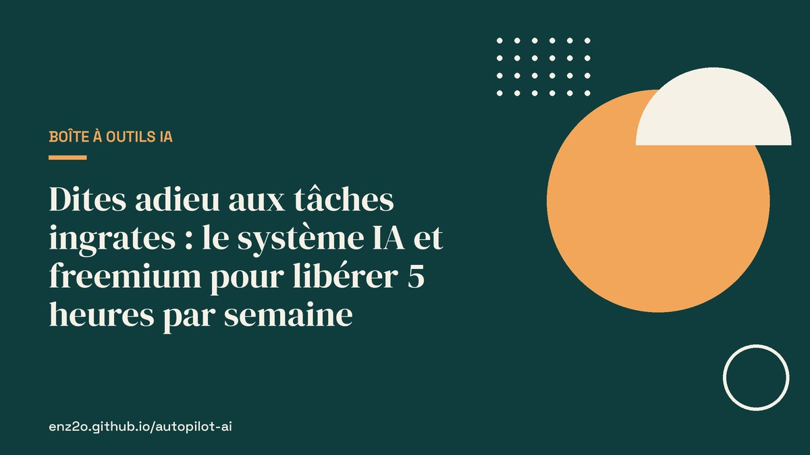

Dites adieu aux tâches ingrates : le système IA et freemium pour libérer 5 heures par semaine
2026-11-17
Article contenant des liens affiliés.

Chaque jour, une multitude de micro-tâches grignote votre temps et votre concentration. Entre les comptes-rendus à synthétiser, les courriels répétitifs, la mise en page de documents, le suivi des contacts et l'organisation des livrables, l'énergie consacrée à votre véritable valeur ajoutée s'évapore.
Ce phénomène a un nom : le coût de changement de contexte (context switching). Passer d'une tâche créative ou stratégique à une corvée administrative épuise la réserve cognitive bien plus vite que le travail de fond lui-même.
Heureusement, il n'est plus nécessaire de souscrire à une demi-douzaine d'abonnements coûteux pour automatiser ces corvées. En combinant judicieusement des modèles d'intelligence artificielle accessibles gratuitement et des outils freemium bien pensés, vous pouvez mettre en place un système robuste qui vous fera gagner entre 3 et 5 heures chaque semaine.
Voici le guide pas à pas pour assainir vos journées de travail sans débourser le moindre centime.
Étape 1 : Dompter le flux d'informations brutes
Que vous prépariez un partiel, un article de blog ou un devis complexe, l'accumulation de notes éparpillées constitue la première source de friction.
Nettoyer et structurer la matière première
Plutôt que de relire l'intégralité d'un enregistrement audio, d'un cours universitaire ou des notes gribouillées lors d'un appel client, confiez le nettoyage initial à un modèle de langage (tel que Claude, ChatGPT ou Mistral dans leurs versions gratuites).
Pour obtenir un résultat immédiatement exploitable, fournissez un cadre strict : - Précisez le format attendu (liste à puces, tableau comparatif, synthèse en 5 points clés). - Demandez d'extraire uniquement les décisions prises et les actions à mener. - Interdisez tout jargon superflu ou phrase de remplissage.
En appliquant cette méthode, un échange de 45 minutes ou un document de recherche de dix pages se transforme en une feuille de route lisible en moins de deux minutes.
Pour ceux qui préfèrent noter leurs idées manuscrites avant de les numériser, l'usage d'un carnet de notes effaçable permet de capturer rapidement ses pensées sur papier tout en facilitant leur transfert vers vos outils numériques sans accumuler des feuilles volantes.
Étape 2 : Accélérer la rédaction et la formulation des réponses
La rédaction à partir d'une page blanche représente une perte d'élan considérable, qu'il s'agisse de répondre à des objections commerciales ou d'expliquer un concept technique.
Construire des gabarits dynamiques
Ne demandez pas à l'IA d'écrire à votre place de bout en bout : le contenu produit serait générique et impersonnel. Utilisez-la plutôt comme un assistant de formulation :
- La relance client bienveillante : donnez vos points clés en vrac (délai dépassé, prochaine étape, lien vers le document) et demandez à l'outil de générer deux variantes de tonalité (l'une formelle, l'autre plus directe).
- Le travail de vulgarisation : soumettez un paragraphe dense et demandez-lui d'en extraire une métaphore concrète pour l'expliquer à un profane.
- La détection d'angles morts : soumettez votre proposition commerciale ou votre plan de mémoire universitaire et posez la question : « Quelles sont les trois questions légitimes qu'un lecteur sceptique se poserait en lisant ce texte ? »
Cette approche vous épargne la fatigue décisionnelle liée aux premiers brouillons, tout en préservant votre style et votre rigueur intellectuelle.
Étape 3 : Centraliser la logistique et la relation client sur une plateforme unique
La dispersion logicielle est le piège classique du travailleur indépendant ou du créateur. Avoir un outil pour envoyer des e-mails, un autre pour héberger un formulaire, un troisième pour facturer et un quatrième pour partager des documents finit par créer un désordre technique difficile à maintenir.
Pour simplifier votre écosystème, il est souvent plus sage de réunir ces fonctions au même endroit. C'est précisément l'intérêt d'une solution tout-en-un comme Systeme.io.
Dans sa version gratuite, cette plateforme francophone permet de gérer plusieurs briques essentielles de votre activité sans friction : - La capture de contacts : créer une page épurée pour proposer une ressource téléchargeable (un guide, un modèle de document ou une checklist issue de vos synthèses IA). - L'automatisation des envois : délivrer automatiquement un contenu par e-mail sans devoir intervenir manuellement à chaque nouvelle demande. - L'hébergement de formations ou d'espaces clients : partager des modules pédagogiques, des fiches de révision ou des livrables sans multiplier les outils de stockage tiers.
En éliminant les allers-retours entre logiciels incompatibles grâce à Systeme.io, vous supprimez les erreurs de synchronisation et gagnez un temps précieux lors de vos lancements ou de vos suivis de projets.
Étape 4 : Optimiser son espace physique pour préserver son endurance
L'optimisation du temps ne dépend pas uniquement des algorithmes ; elle repose également sur la qualité de votre concentration. Travailler des heures durant sur un ordinateur portable mal positionné engendre des tensions musculaires qui diminuent progressivement votre vigilance intellectuelle.
Pour maintenir un niveau d'attention soutenu lors de vos sessions de travail intense, équiper votre bureau d'un support d'ordinateur portable réglable aide à positionner l'écran à hauteur des yeux, réduisant ainsi la fatigue cervicale et favorisant une meilleure posture générale.
Un corps moins tendu permet de rester focalisé sur ses objectifs sans ressentir le besoin d'interrompre sa séance de travail toutes les demi-heures.
La routine hebdomadaire en 3 étapes pour verrouiller vos acquis
Pour que ce système porte ses fruits sur la durée, intégrez ces trois réflexes à votre calendrier chaque vendredi après-midi :
- Le sas de décompression documentaire : rassemblez tous les fichiers et notes de la semaine dans un dossier temporaire, passez-les au crible d'un prompt récapitulatif pour n'en garder que la substantifique moelle, puis archivez le reste.
- L'actualisation des modèles : si vous avez rédigé manuellement un e-mail ou une réponse particulièrement efficace cette semaine, copiez-la dans votre bibliothèque de prompts personnels pour pouvoir la réutiliser à volonté.
- L'audit des outils : assurez-vous que vous n'avez pas réintroduit d'application superflue. Si une tâche peut être prise en charge directement par votre plateforme centrale ou par une consigne IA claire, conservez la solution la plus sobre.
En appliquant ce protocole pas à pas, vous cessez de subir le poids des micro-tâches pour vous concentrer sur l'essentiel : approfondir vos compétences, soigner vos clients et concevoir des contenus qui comptent vraiment.